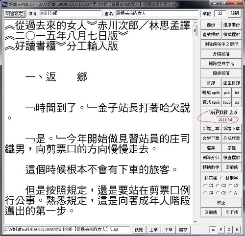

|
|
|
|
|
|
好讀製書程式 mPDB 2.6 周劍輝
免費 mPDB26.zip [下載] 2011/10/22 (492K) 2011/11/15
- 請先在PC或隨身碟上建一個 mPDB26 目錄。
- 將下載的 mPDB26.zip 解壓縮至 mPDB26 目錄。
- 解出的檔案只有五個：
1) mPDB.exe
2) 錯別字.txt (使用於校正)
3) big5.txt (使用於轉出pdb檔)
4) stylesheet.css
5) page-template.xpgt
後兩者是在產生epub檔時，要複製至epub檔中 (您可以修改這兩個檔案)。
- mPDB.exe 立馬可用，沒有其他囉唆的安裝程式。
- 尚未重新撰寫說明的舊功能，請參看 mPDB 2.1 及 mPDB 2.2 的說明。
- 使用mPDB，螢幕解析度至少要1024x768。
- 任何文字，不論是多罕見的中文字，簡體、日文或韓文，只要在網頁或任何文書軟體上能正常顯示的，都能複製貼上 mPDB 的編輯視窗，正常顯示，並製作成書。
mPDB 使用說明
mPDB 2.6 主要新增功能 2011/11/15
- 除了updb/pdb檔，可產生epub、prc及txt檔。
- 原先製書設定有目錄一項，已廢除。目錄就是inf所在的資料夾，方便移動資料夾。也就是開啟資料夾中的inf，就可修改該資料夾中的文字檔。
- 校正檔，在mPDB.exe的資料夾，除了預設的錯別字.txt，您可自行另設C1.txt, ..., C5.txt；在書的資料夾，您可自設A.txt (我是用這項功能來修改讀友提供的勘誤表)。
- 增加〔分成兩章〕〔合併下章〕功能，方便由一個文字檔快速製書。
- 增加〔新增下章〕〔新增上章〕功能，方便逐章快速製書。

mPDB 2.5 主要新增功能 2010/8/1
製書設定增加作者欄位，並解決PDB檔在Palm上無法閱讀的問題。
mPDB 2.4 主要新增功能 2010/7/21
增加轉成 [橫式] 標點符號的功能。
mPDB 2.3 主要新增功能 2010/7/15
- uPDB 及 PDB 檔的規格說明在 mPDB 2.2。
- (刪節號「……」，用於節略原文、語句未完、意思未盡，或表示語句斷斷續續等。) 因Big5碼無對應直式標點符號，且在Palm機子上無法將字旋轉九十度，之前改用破折號「｜」代替。這個變通方法有後遺症，就是無法還原。為了解決這個問題，mPDB 2.1 改用一個Big5碼較細的豎線「│」替代直式刪節號。
Unicode雖然可輸入顯示的字很多，就是沒有直式的刪節號 (……)。本版則在產生的uPDB檔改為Unicode碼的「￤」，在PDB檔仍維持Big5碼的「│」。
- 直接取代功能，改為不顯示過程，因而能瞬間完成。
- 增加只尋找功能。
- 增加 [備份] [還原備份] 的功能。
|
|
|
|
|
|
|
|
| 搜尋好讀 |
|
好讀第17年了。
有好讀真好，有你也真好。但不知遍及各地的你，究竟有多少。若你從未或很久沒贊助過好讀，請按這裡，贊助好讀美金或人民幣十元，讓我知道你存在。
11/25香港 Dennis C
幾年前由朋友介紹得悉好讀，多年來在旅途中它都帶給我很多樂趣。香港地方狹小，不少書都因地方問題而送人或丟棄，好讀卻帶給了我很多閲讀的方便、亦節省了儲存的位置。衷心多謝各位工作仝人！
11/19 美國紐約 June
發現好讀幾年了，但現在才發現這好讀留言板。抱歉呢，理應更早道謝。身在海外，要看一本中文書不是易事。書店售書種類少，價錢高；圖書館借書種類更少。幸好發現好讀網，可以一解書癮。衷心感謝所有有心人上載和校對。
11/17 大陸 Shirley
偶然發現好讀網這塊寶地真的很驚訝，網絡上有這樣安靜舒適的地方可以閱讀電子書，對我這種資金短缺的學生真的很意外很開心！
11/16 香港 chair chun wai
因為買了Kindle的緣故，所以才發現"好讀"這個地方。感謝"好讀"一直的更新和提供書本給大家。感謝感謝
11/15 香港 mike chan
我認識好讀是因爲kindle。那時中學買了kindle，需要找找電子書，因此在網上發現了好讀。對於繁體字kindle用家，這是個大福音！
11/13 大陸 BerthaR
今天因為Kindle的緣故找書，才發現好讀這個地方。感覺是一方淨土，公益地為書友們獲取知識省下了不少財力，節省了大家的時間：）目前我只是個高中生，提供的也只有十塊錢而已啦。十七年的好讀真是令人敬佩！希望你們知道我的感謝，還有知道更多人的感謝！
11/9 香港 MJ
從小喜愛看書，看書人也許都知道要管理保存書本是不容易的（尤其香港的地方空間更有限）。今年開始嘗試電子書，看看能否接受。因為好讀網的海量書本，小弟所喜愛的黃易＋衛斯理，還有準備開始看的金庸也不用愁了。感謝好讀！
>> 更多
|
|
|